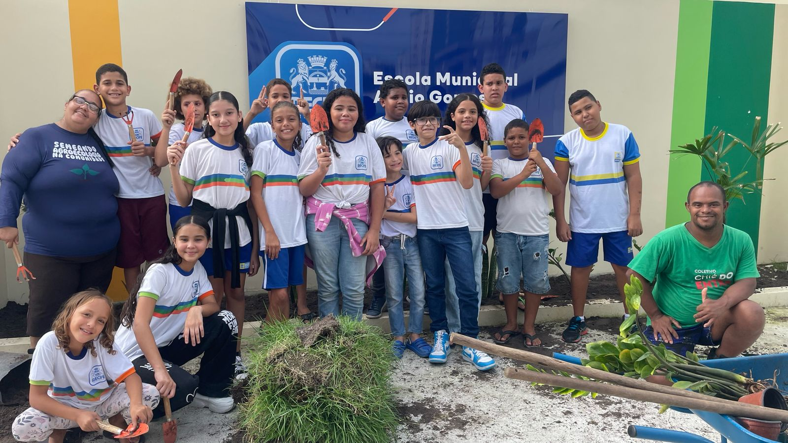

Compostagem Pedagógica
O projeto de compostagem do Coletivo Chié do Entra tem mostrado resultados impressionantes desde o seu início em abril de 2021. Com a participação de 135 famílias, a iniciativa começou com a compostagem de baldinhos, um método simples e eficiente para transformar resíduos orgânicos em adubo. Ao longo do tempo, o projeto cresceu e, até agora, já transformou 13 toneladas de resíduos orgânicos, ajudando a reduzir o descarte inadequado e contribuindo para a melhoria do meio ambiente local.
A expansão do projeto chegou também às escolas da comunidade, com a implementação das composteiras pedagógicas. Atualmente, as quatro unidades de ensino da comunidade Entra Apulso participam ativamente da ação: a Escola Municipal Abílio Gomes, a Escola Estadual Inalda Spineli, a Creche Comunitária Nossa Senhora da Boa Viagem e o Instituto Shopping Recife. Essas instituições não apenas realizam a compostagem como parte das atividades escolares, mas também servem como locais de aprendizado sobre práticas sustentáveis para alunos e professores.
O objetivo do projeto é, além de diminuir o descarte de resíduos orgânicos, gerar adubo de qualidade que será utilizado nas áreas verdes da própria comunidade. Com isso, o Coletivo Chié do Entra busca promover uma maior autossuficiência ambiental, melhorando a qualidade de vida e incentivando os moradores a se envolverem ativamente no cuidado e preservação do seu território. A compostagem se torna, assim, um símbolo de transformação, gerando benefícios tanto para o meio ambiente quanto para a saúde e o bem-estar da comunidade.